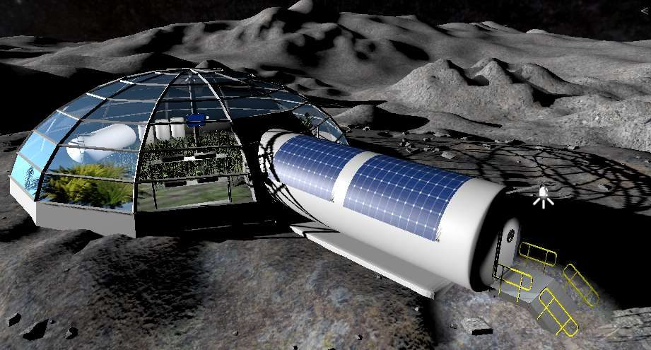
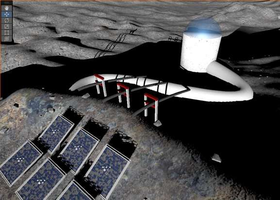
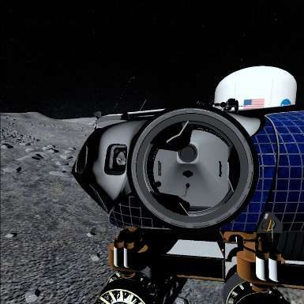

Realtà virtuale · 2021–2024
MOON RESCUER
Un'app in realtà virtuale che porta chi la prova sulla superficie della Luna. L'ho progettata e sviluppata da solo durante il dottorato in Astronomia, per raccontare la scienza e l'esplorazione lunare facendola vivere in prima persona.
- Ruolo
- Ideazione, design e sviluppo
- Periodo
- 2021–2024
- Contesto
- Dottorato, Università di Padova e INAF
- Dispositivo
- Meta Quest 2

L'app
In MOON RESCUER ci si muove in un ambiente lunare ricostruito in 3D e si affrontano scenari di missione ispirati all'esplorazione reale della Luna: basi abitative, pannelli solari, rover. Il visore trasforma ciò che di solito si racconta con immagini e numeri in un'esperienza da vivere in prima persona.
L'app è il cuore della mia tesi di dottorato, dedicata all'uso della realtà virtuale per la comunicazione dell'astronomia. Ho seguito l'intero ciclo di sviluppo: requisiti, architettura, programmazione, ottimizzazione per un visore standalone e distribuzione.
Da MOON RESCUER è nato poi MOON LIGHTENER, la versione multigiocatore in cui due persone esplorano la Luna insieme, sviluppata in una tesi di laurea che ho co-diretto.
Trailer
Risultati
Ho testato l'app con il pubblico e con i ricercatori, raccogliendo feedback quantitativi attraverso questionari. Le risposte hanno guidato più cicli di miglioramento dell'usabilità e dei contenuti.
- tester tra pubblico e ricercatori
- ~100
- dal grande pubblico, tra i 15 e i 25 anni
- 50%
- dalla comunità scientifica, a tutti i livelli di carriera
- 50%
Mi sono sentita come se fossi davvero sulla Luna
È molto coinvolgente, quindi suggerirei di aggiungere un altro paio di attività interattive
Dentro l'app


Realizzato con
-
Unity Motore di sviluppo (C#, OpenXR)

-
Blender Modellazione 3D

-
Meta Quest 2 Visore di riferimento